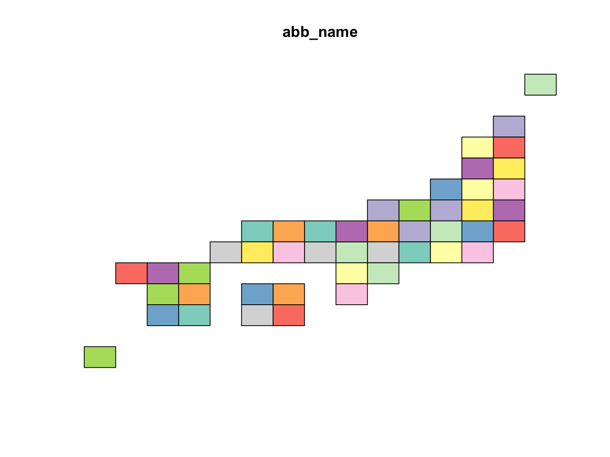

Overview
The {jpmesh} package is a package that makes it easy to use “regional mesh (i.e. mesh code JIS X 0410 )” used in Japan from R. Regional mesh is a code given when subdividing Japanese landscape into rectangular subregions by latitude and longitude. Depending on the accuracy of the code, different regional mesh length. By using the same mesh in statistical survey etc., it will become possible to handle the survey results of a large area in the area mesh unit.
In jpmesh, mesh codes and latitude and longitude coordinates are compatible with mesh codes from the first region mesh, which is the standard region mesh, to the quarter regional mesh of the divided region mesh (from 80 km to 250 m). Features include “conversion from latitude and longitude to regional mesh”, “acquisition of latitude and longitude from regional mesh”, “mapping on prefecture unit and leaflet”.
Installation
Fron CRAN
install.packages("jpmesh")For developers
# the development version from GitHub:
install.packages("devtools")
devtools::install_github("uribo/jpmesh")Usage
library(jpmesh)
library(dplyr, warn.conflicts = FALSE)
library(ggplot2)Convert mesh code to coordinate and vice versa
Return the latitude and longitude for specifying the mesh range from the mesh code.
meshcode_to_latlon(5133)
#> lat_center long_center lat_error long_error
#> 1 34.33333 133.5 0.3333333 0.5
meshcode_to_latlon(513377)
#> lat_center long_center lat_error long_error
#> 1 34.625 133.9375 0.04166667 0.0625
meshcode_to_latlon(51337783)
#> lat_center long_center lat_error long_error
#> 1 34.65417 133.9187 0.004166667 0.00625Find the mesh code within the range from latitude and longitude.
latlong_to_meshcode(34, 133, order = 1)
#> [1] 5133
latlong_to_meshcode(34.583333, 133.875, order = 2)
#> [1] 513367
latlong_to_meshcode(34.65, 133.9125, order = 3)
#> [1] 51337782Detect fine mesh code
detect_mesh(52350422, lat = 34.684176, long = 135.526130)
#> [1] 523504221
detect_mesh(523504221, lat = 34.684028, long = 135.529506)
#> [1] 5235042212Utilies
Drawing a simplified Japanese map based on the mesh code.
library(sf)
#> Linking to GEOS 3.6.1, GDAL 2.1.3, proj.4 4.9.3
plot(jpnrect["abb_name"])

Dataset of mesh code for prefectures.
set.seed(71)
administration_mesh(code = 33, type = "prefecture") %>%
dplyr::sample_n(5) %>%
knitr::kable()| mesh_code | city_code | city_name | geometry |
|---|---|---|---|
| 523346 | 33666 | 久米郡美咲町 | 133.75000, 133.87500, 133.87500, 133.75000, 133.75000, 35.00000, 35.00000, 35.08333, 35.08333, 35.00000 |
| 523304 | 33207 | 井原市 | 133.50000, 133.62500, 133.62500, 133.50000, 133.50000, 34.66667, 34.66667, 34.75000, 34.75000, 34.66667 |
| 523346 | 33203 | 津山市 | 133.75000, 133.87500, 133.87500, 133.75000, 133.75000, 35.00000, 35.00000, 35.08333, 35.08333, 35.00000 |
| 513470 | 33212 | 瀬戸内市 | 134.00000, 134.12500, 134.12500, 134.00000, 134.00000, 34.58333, 34.58333, 34.66667, 34.66667, 34.58333 |
| 513375 | 33208 | 総社市 | 133.62500, 133.75000, 133.75000, 133.62500, 133.62500, 34.58333, 34.58333, 34.66667, 34.66667, 34.58333 |
Example)
# For leaflet
library(leaflet)
leaflet() %>% addTiles() %>%
addProviderTiles("OpenStreetMap.BlackAndWhite") %>%
addPolygons(data = administration_mesh(code = 33101, type = "city"))
ggplot() +
geom_sf(data = administration_mesh(code = 33, type = "city"))